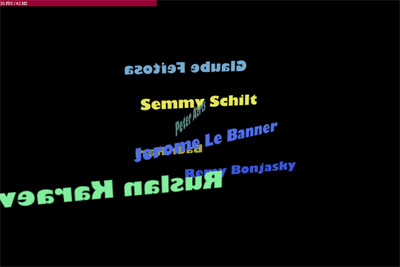

注)重いかもです。

フォント埋め込み＆パブリッシュした時の待ち時間に萎えてしまったので
CS3版 フォントのダイナミックなローディング@_level0.CUPPY
↑を試してみました。
これはイイ！！パブリッシュ萎えに悩まされなくて済みそうだ。
フォント関係ついでに
AS3.0 で 3D プログラミングを１から勉強する (1~5)@てっく煮ブログ
↑こちらも試してみたかったのだが、第3,4回あたりで僕の頭脳ではついていけないことに。。。
そんなこんだで、FIVe3D 2.1に手を出してみた。
読み込んだフォントを3D表示したかったわけだが、
やりかた分からないので、TextFieldをBitmapData化して
Bitmap3Dクラスに突っ込む方法でやってみた。
TextFieldを可読性重視設定にした場合、BitmapData.drawできない@fladdict
ちなみに↑な問題にもぶちあたったが、Spriteで包む方法で逃げた。
っと、こんなめんどくさい方法をやらなくても、
FIVe3Dで好きなフォントを使う(日本語も)@moriBlog
FIVe3D 2.1のAdditional DownloadとしてMake a new typographyというswfがあり、こいつがフォントクラスを生成してくれるようだ。
更にHydroTweenになれようとちょこっとだけ使ってみた。
がしかし、
easing:Quadratic.easeInOut
↑のようなイージング関連がないぞーっと怒られっぱなしで迷宮入り。
正体は、FLASHがデフォルトでもっている、
import fl.motion.easing.*;
↑こやつでした。
ここまで組み上げてみたが、3D回転時にある位置にくると
恐ろしく重くなったりする症状で再び迷宮入り。
これは原因分からないまま。。
PaperVision3D使えってことか。
Five3Dはソースが読めるぐらいの数だから気楽に使えそうなんだが。。